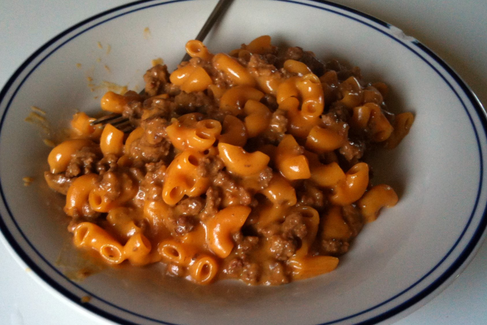

Healthy Hamburger Helper

Description
This "healthy" version of a Hamburger Helper recipes includes all the familiar taste of the name brand, but with many veggies hidden within.
Ingredients
- 2 T olive olive
- 1 large onion, chopped
- 1 large carrot, grated or chopped
- 1 ts salt
- 1/4 ts black pepper
- 1.5 ts garlic powder
- 1 ts chili powder
- 1 ts paprika
- 2 T tomato paste
- 1 T Worcestershire sauce
- 3 C baby spinach, roughly chopped
- 8-10 oz elbow macaroni
- 3 C chicken or beef broth
- 3/4 C plain yogurt
- 1 C shredded cheddar cheese
Steps
- Heat oil over medium heat in a large pot or high-sided skillet.
Add onion and carrot and cook until softened, about 5 minutes.
- Add ground beef, breaking it up into small crumbles. Cook until browned.
Stir in salt, pepper, garlic powder, chili powder, and paprika.
Stir in tomato paste and cook for 30 seconds to develop the flavors.
Add Worcestershire sauce, spinach, pasta, and then stir in the broth.
- Cover and bring up to a simmer. Cook until pasta is tender, about 10 minutes,
stirring every couple minutes to make sure nothing sticks to the bottom of the pan.
If the liquid fully evaporates before the pasta is cooked,
stir in an additional ½ cup of broth or water.
- Remove lid then stir in yogurt and cheese. The pasta will absorb more liquid as it sits,
so it’s ok if there seems to be a lot of sauce.
Taste and add more salt and pepper, as needed.
Return to Home